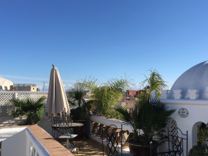
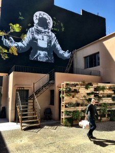

Arbeiten im Ausland
Arbeiten wo andere Urlaub machen- Meine Premiere in Marokko
Lange schon ruft immer wieder das Fernweh in mir. Ich möchte in meinem Leben Reisen und Arbeiten mehr verbinden. Obwohl es mich so sehr in die Ferne zieht, gibt es auch eine Kraft, die dagegen arbeitet. Dazu aber an anderer Stelle mehr. Aber schon ein paar Mal hat das Fernweh gesiegt und ich habe außerhalb Deutschlands gearbeitet und dabei immer viel gelernt. Bisher hatte ich im beim Arbeiten im Ausland jedoch immer konkrete Kundentermine vor Ort.
Aber dieses Mal und darüber möchte ich berichten, bin ich zum „Stillen Arbeiten“ losgefahren. Ich wollte Dinge abarbeiten, die ich schon lange tun wollte und wofür ich nicht nur Zeit sondern auch Muße brauche, weil sie mir nicht so leicht von der Hand gehen, wie zum Beispiel Blogartikel schreiben oder umfangreiche Recherchen. Um mir zum Beispiel neue umfangreichere Programme anzuschauen und auszuprobieren brauche ich schlichtweg Zeit und Ruhe. Obwohl ich im allgemeinen sehr gut organisiert bin, schiebe ich solche Sachen manchmal vor mir her, dabei sichern sie das Geschäft von Übermorgen.
Also gibt es wieder mal ein Experiment: CoWorking in der Sonne, weil ich weiß, dass Sonne mich motiviert. Und wenn ich CoWorking sage, dann meine ich auch arbeiten, nicht unbedingt mit anderen, aber für mich mindestens einen halben Tag täglich. Man könnte einwenden, das könne ich ja auch in Hamburg tun. Meine Antwort lautet ja und nein. Ich habe das ewige Grau in Hamburg derzeit ziemlich satt und muss einfach mal raus, um mich zu den oben genannten Dingen motivieren zu können.
Aber einfach irgendein Quartier in der Sonne buchen wollte ich nicht. Sondern für diese Form der Arbeit in Kombination mit Sonne gab es für mich ein paar Kriterien.
Meine Kriterien für Kurzzeit-Arbeiten im Ausland:
- es muss eine Arbeitsumgebung, also so etwas wie ein Büro vorhanden sein
- das Internet muss sehr gut bis gut sein
- die Destination muss gut per Flug, Zug von HH erreichbar sein
- Unterkunft und Versorgung vor Ort soll nicht allzu teuer sein
In den letzten Jahren habe ich häufiger mal die Erfahrung gemacht, international aber auch in Deutschland oft, dass die Hotel- oder Pensionsinhaber sagen, sie hätten Internet, aber vor Ort musst ich feststellen, dass es für wirkliches Arbeiten inklusive Skypeterminen völlig untauglich war. Dieses Risiko konnte ich für einen geplanten Arbeitsaufenthalt nicht eingehen. Ich weiß ja aber, dass es überall auf der Welt sogenannte CoWorking Plätze gibt und schon lange nicht mehr nur in den großen Städten, sondern auch an schönen Plätzen.
In der Gruppe der Digitalen Nomaden bei Facebook hatte ich von Sun Desk in Taghazout Marokko gelesen und war sofort angetan. Ich war noch nie in Marokko und sah eine wunderbare Gelegenheit tatsächlich Reisen, im Sinne von Neues Entdecken mit Arbeit zu verbinden. Und ich hatte unbedingte Lust mal auf was ganz anderes, eine andere Kultur, anderes Essen, andere Sprache. Insofern konnte mein Freund mit seinem Gegenvorschlag auf Fuerteventura bei mir nicht landen. Er hat Fuerteventura ausprobiert und ich Marokko. Und nach Marokko zu fliegen ohne Marrakech zu sehen geht natürlich nicht :-). Daher habe ich mich für Marrakech und Taghazout entscheiden. Hier meine Erfahrungen.
Marrakesch und Marokko sind unbedingt eine Reise wert. Über Marrakech kann man in Reiseblogs sehr viel lesen. Ich beschränke mich daher hier auf meine gewünschte Kombination Reisen und Arbeiten.
Ich bin in einem sehr schönen Riad (eine Mischung zwischen Hotel und Pension) in Marrakesch untergekommen: Riad Palais Des Princesses. Das Riad war mitten in Medina gelegen, und war dennoch eine Oase der Ruhe. Eine weit gereiste Freundin hatte mich noch gewarnt, mittendrin in Marrakesch könnte sehr laut sein, war es aber in „meinem“ Riad überhaupt nicht. Alles an Sehenswürdigkeiten für zwei Tage war fußläufig erreichbar. Das Riad war noch schöner und mein Zimmer auch, als es bei Booking.com in der Beschreibung angegeben war. Mein Zimmer war liebevoll dekoriert, das Frühstück super und die Dachterasse mit Blick bis zum Atlas Gebirge war wunderschön.
Riad Palais Des Princesses
Wichtig, da ich ja auch in der Zeit in Marrakesch arbeiten wollte: das Internet im Hotel war gut. Ich hatte extra gefragt und mir die Bewertungen diesbezüglich angeschaut. Schon am ersten Tag wusste ich allerdings, dass ich Skypegespräche lieber früh am Morgen führe, als abends, wenn alle Hotelgäste wieder da und im Internet sind. Aber insgesamt hat das gut funktioniert, selbst auf der Dachterrasse.

Ausblick von der Riad Dachterrasse

Business Emerging Factory
Aber auch in Marrakech gibt es inzwischen einen CoWorking Place: die Business Emerging Factory. Sehr schön und neu, nur noch nicht ganz fertig. Ich hatte den Platz im Internet gefunden und da war von einem Cafe und einem Conceptstore die Rede. Beides ist angedacht, aber weit davon entfernt fertig zu sein. Die Location selbst ist schön und in einem kleinen Industriegebiet gelegen. Der Taxifahrer wollte 100 Dirham, weil er meinte, das sei 20 Kilometer weg. Ich hatte aber schon nachgesehen, es sind nur 5-6 Kilometer von der Innenstadt und für 50 Dirham bin ich dann gefahren. Allerdings hat der Taxifahrer noch 45 Minuten gesucht, weil er nicht wusste wo es ist und die Adresse auch nicht so aussagekräftig war. Also wer plant, zur Business Emerging Factory in Marrakech zu fahren, vorher auf dem Plan genau anschauen (man kann genau sehen wo es ist), um den Taxifahrer zu leiten.
Außen wie innen ist die Business Emerging Factory schön gemacht, große Räume, große Schreibtische und ein schöner großer Meetingraum. Alle waren superfreundlich und weil ich Gast von so weit her gekommen und noch nicht alles fertig war, durfte ich „for free“ arbeiten. Allerdings muss ich eingestehen, dass ich mit besseren Französischkenntnissen wohl noch das eine oder andere nette Gespräch mehr gehabt hätte. Aber wenn ich das Thema Arbeiten im Ausland intensiviere werden die Sprachkenntnisse auch besser.
Fazit erste Erfahrung für Arbeiten im Ausland (ohne Kundentermine)
Meine drei Tage Marrakesch waren sehr intensiv, viel gesehen, viel gearbeitet, aber ohne Stress und egal, ob ich im Büro oder draußen bin, Sonne und blauer Himmel motivieren mich einfach. Nach Marrakech geht es dann weiter an die Küste, nördlich von Agadir zu einem CoWorking Space mit Übernachtung in Taghazout.
Weitere Artikel

Gar nicht lean ist auch mal gut
Das schlanke, entschlackte, effiziente Büro ist meine Leidenschaft. Doch vor einiger Zeit habe ich erfahren, dass es manchmal gut ist, nicht lean zu sein, nicht auf die „schlanke Linie“ zu achten. Ich war eingeladen, einen …

Checkliste Reisen und Arbeiten
Immer wieder habe ich gemerkt, dass auf Reisen generell zu viel einpacke, dafür aber wichtige Kleinigkeiten, die das Leben wirklich leichter machen, gern mal vergesse. Da ich immer mehr Arbeiten und Reisen verbinde, kann das …